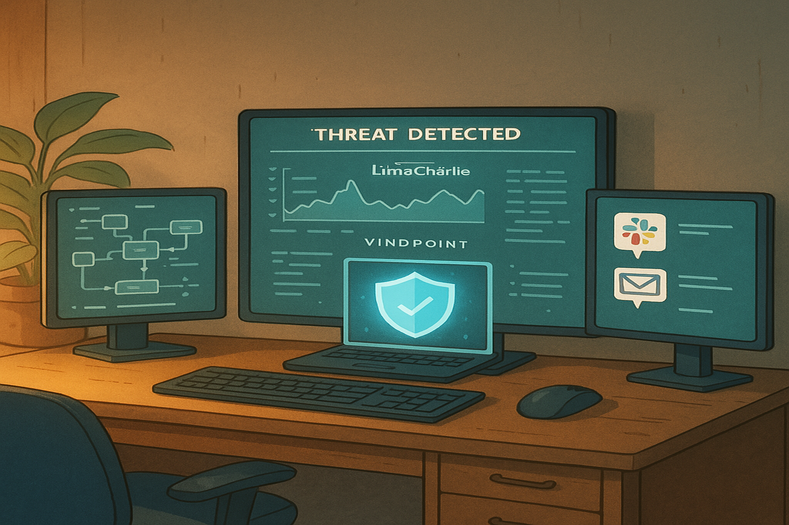
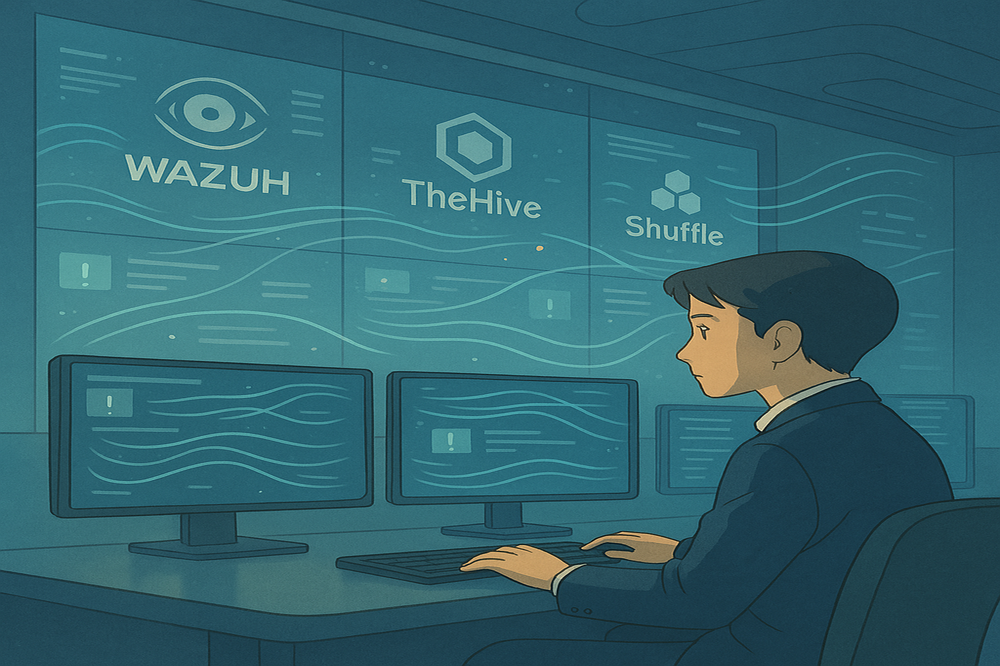
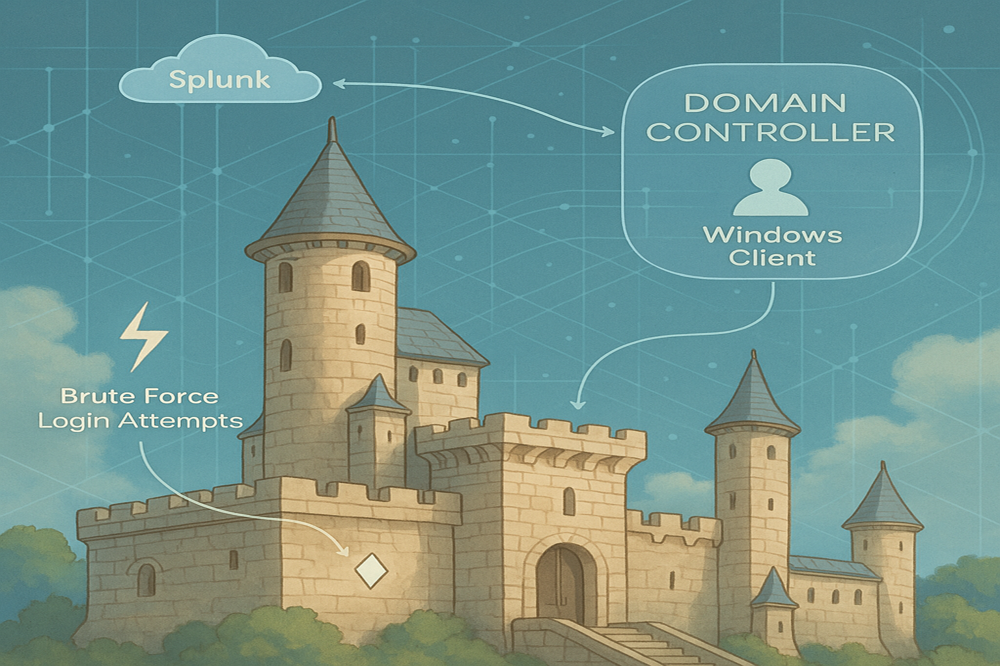
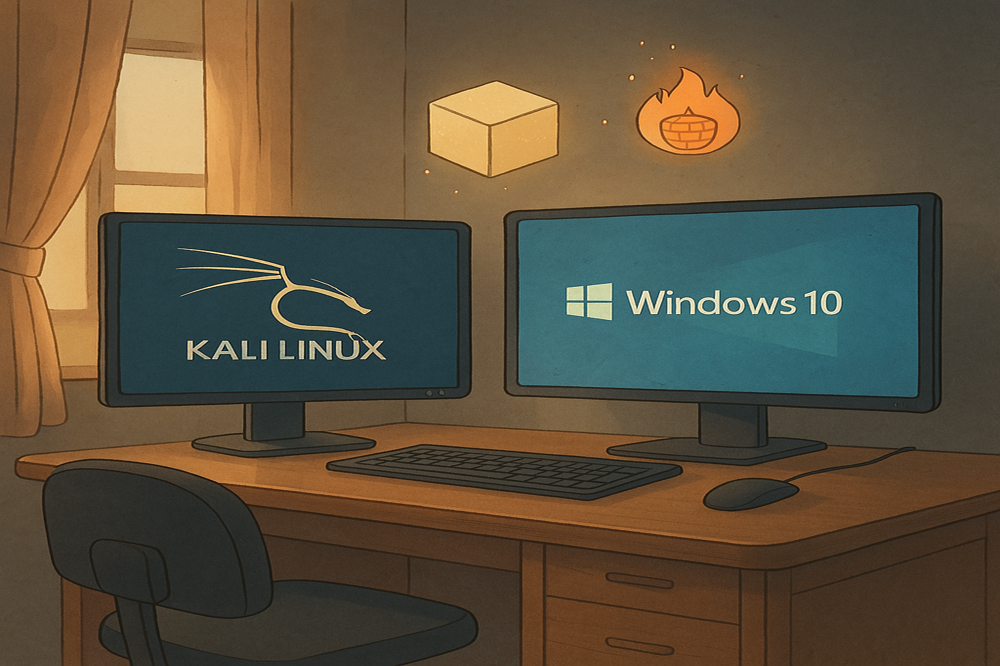
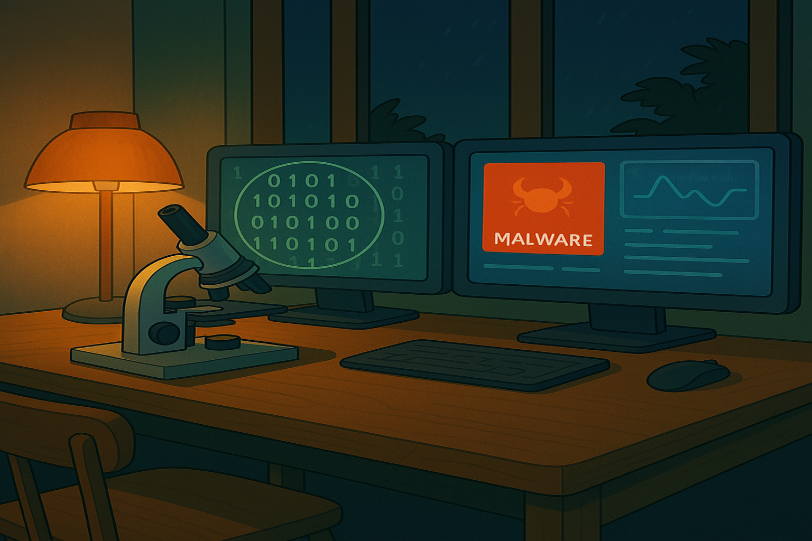
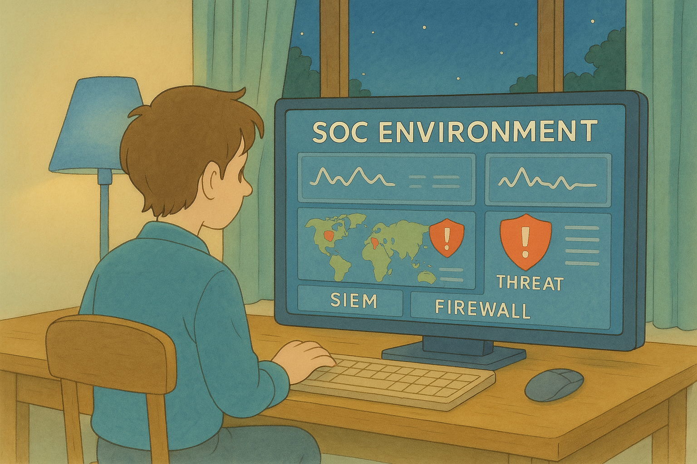

Built a complete detection and response workflow integrating Lima Charlie EDR, Tines SOAR platform, and Slack for real-time threat alerts and automated endpoint isolation. Developed custom detection rules, automated decision workflows, and tested dynamic playbooks simulating real-world credential access threats.

Designed and deployed a fully automated Security Operations Center (SOC) lab by integrating SIEM (Wazuh), SOAR (Shuffle), and case management (TheHive), enabling real-time threat detection, enrichment, incident creation, analyst notifications, and active response workflows.

Deployed a full Active Directory environment with Windows Server, Windows 10, Ubuntu (Splunk), and Kali Linux. Built and attacked the domain using Crowbar and Atomic Red Team, while capturing and analyzing telemetry with Sysmon and Splunk. Developed skills in detection engineering, attack simulation, and security operations monitoring.

Built an isolated VirtualBox lab with Windows 10 and Kali Linux to safely test malware, security tools, and attack simulations. Configured secure networking, validated downloads, and implemented snapshot management for safe and repeatable cybersecurity experiments.

A cybersecurity project focused on analyzing malicious software through static and dynamic techniques within a secure virtual environment. Utilized tools like Flare VM, Wireshark, and VirtualBox to safely investigate malware behavior, detect attack patterns, and implement best practices in malware defense.

In Progress: Currently building a mini SOC environment using the ELK Stack, Mythic C2, and OS Ticket. Setting up alerts, dashboards, and automated ticketing workflows. Simulating attacks to generate telemetry and practice detection techniques. Gaining hands-on experience in SOC operations and incident response.